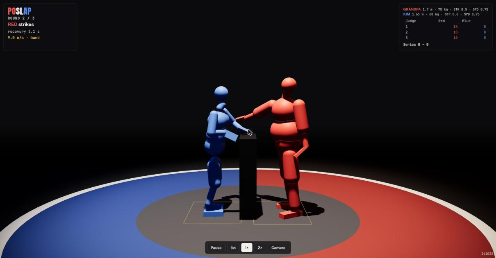

New: a web version of the Grandpa vs Kim match (Web/). Before: the match only ran in Unreal. After: MuJoCo 3.10.0 (the version training uses) runs in the page as WebAssembly, the trained ONNX brains run in ONNX Runtime Web, and three.js draws every physics shape where MuJoCo puts it: red Grandpa, blue Kim, the podium and foot boxes on a red and blue mat. The HUD shows round, striker, clock or recovery time, the last strike (speed, palm or foul), the call, the tale of the tape, the three judges' cards and the series; the bar at the bottom pauses, slows to a quarter, doubles speed and cycles three cameras. Rules, judges, the slap impact and fatigue are training/match.py's. Shown: Grandpa's clean 9.0 m/s palm on Kim in round 2.
